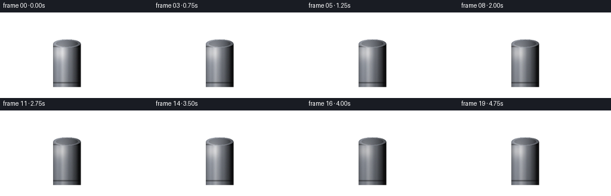
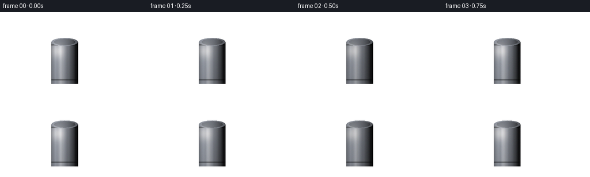

CODING AGENTS AS PIXEL WORLD MODELS
traex/Seed-2.1-Pro-0915 · phygen_042
点击播放 · 原生 RGB 像素
逐轮保存的候选
回放视频、检查图与代码变化。
每份候选均可单独播放。实际图片检查记录在下方工具轨迹中。
候选 01播放与检查图
点击播放 · 原生 RGB 像素


展开代码变化
--- 上一保存版本
+++ 本次保存版本
@@ -0,0 +1,159 @@
+"""Procedural text-to-video: diagonal light ray on a metal can in the dark.
+
+Renders 20 frames at 256x144 (4 fps) with numpy/PIL only. The scene is drawn
+at 2x resolution and downsampled for anti-aliased edges.
+"""
+import numpy as np
+from PIL import Image
+
+import artifact_io
+
+# ---------------------------------------------------------------- spec
+W, H, N, FPS = 256, 144, 20, 4.0
+SS = 2
+W2, H2 = W * SS, H * SS
+TAU = 2.0 * np.pi
+
+# Geometry in final-resolution pixel coordinates.
+FLOOR_Y = 116
+CAN_X, CAN_R, CAN_TOP, CAN_BOT, LID_RY = 112, 23, 52, 125, 7
+SRC = np.array([-32.0, -42.0]) # off-screen light source (upper left)
+END = np.array([CAN_X - CAN_R * 0.55, CAN_TOP + 16.0]) # where the ray meets the can
+
+rng = np.random.default_rng(7)
+
+
+def smoothstep(e0, e1, x):
+ t = np.clip((x - e0) / (e1 - e0), 0.0, 1.0)
+ return t * t * (3.0 - 2.0 * t)
+
+
+# ---------------------------------------------------------------- static background
+yy, xx = np.mgrid[0:H2, 0:W2].astype(np.float32) / SS
+gx = np.clip(yy / (H - 1), 0, 1)[..., None]
+bg = np.array([9, 10, 14], np.float32) * (1 - gx) + np.array([17, 16, 19], np.float32) * gx
+
+floor_mask = yy >= FLOOR_Y
+floor_t = np.clip((yy - FLOOR_Y) / (H - FLOOR_Y), 0, 1)
+floor_col = np.array([27, 24, 25], np.float32) * (1.0 - 0.28 * floor_t)[..., None]
+bg = np.where(floor_mask[..., None], floor_col, bg)
+
+dist = np.sqrt(((xx - W * 0.5) / (W * 0.72)) ** 2 + ((yy - H * 0.55) / (H * 0.72)) ** 2)
+vig = np.clip(1.18 - dist, 0, 1)[..., None]
+bg *= 0.55 + 0.45 * vig
+
+# ---------------------------------------------------------------- can geometry (static)
+u = np.clip((xx - CAN_X) / CAN_R, -1, 1)
+nz = np.sqrt(np.maximum(0.0, 1.0 - u * u))
+body_mask = (np.abs(xx - CAN_X) <= CAN_R) & (yy >= CAN_TOP) & (yy <= CAN_BOT)
+ell_q = ((xx - CAN_X) / CAN_R) ** 2 + ((yy - CAN_TOP) / LID_RY) ** 2
+lid_mask = ell_q <= 1.0
+body_mask &= ~lid_mask
+can_alpha = (body_mask | lid_mask).astype(np.float32)
+
+# Light vector (upper-left, slightly in front of the can) and Blinn-Phong half vector.
+L = np.array([-0.45, -0.55, 0.70]); L /= np.linalg.norm(L)
+Hv = L + np.array([0.0, 0.0, 1.0]); Hv /= np.linalg.norm(Hv)
+ndl = np.maximum(u * L[0] + nz * L[2], 0.0)
+spec = np.maximum(u * Hv[0] + nz * Hv[2], 0.0) ** 46
+
+# ---------------------------------------------------------------- dust motes
+P = 38
+p_t0 = rng.uniform(0.05, 1.0, P)
+p_perp = rng.uniform(-0.8, 0.8, P)
+p_speed = rng.uniform(0.02, 0.07, P)
+p_phase = rng.uniform(0, TAU, P)
+p_rad = rng.uniform(0.6, 1.6, P)
+p_alpha = rng.uniform(0.15, 0.5, P)
+
+beam_v = END - SRC
+beam_len = np.linalg.norm(beam_v)
+beam_dir = beam_v / beam_len
+beam_perp = np.array([-beam_dir[1], beam_dir[0]])
+
+WARM = np.array([1.0, 0.91, 0.77], np.float32)
+ALBEDO = np.array([0.60, 0.62, 0.66], np.float32)
+SPEC_COL = np.array([1.0, 0.95, 0.86], np.float32)
+
+frames = []
+for fi in range(N):
+ sec = fi / FPS
+ img = bg.copy()
+
+ # Flicker shared by beam, pool, specular and impact glow.
+ flick = (1.0 + 0.07 * np.sin(TAU * 1.7 * sec + 0.4)
+ + 0.05 * np.sin(TAU * 4.3 * sec + 2.1))
+
+ # ------------------------------------------------------------ diagonal light ray
+ rel = np.stack([xx, yy], -1) - SRC
+ t = ((rel * beam_v).sum(-1) / (beam_len ** 2))
+ perp = np.abs(rel[..., 0] * beam_v[1] - rel[..., 1] * beam_v[0]) / beam_len
+ tc = np.clip(t, 0, 1)
+ half_w = 4.0 + 14.0 * tc
+ core = np.exp(-2.4 * (perp / half_w) ** 2)
+ wide = np.exp(-2.4 * (perp / (half_w * 2.4)) ** 2) * 0.35
+ env = np.clip(t / 0.08, 0, 1) * np.clip((1.08 - t) / 0.08, 0, 1)
+ streak = 1.0 + 0.18 * np.sin(perp * 1.1 + t * 26.0 + 0.8)
+ beam_a = (core * 0.10 + wide * 0.05) * env * flick * streak
+ img += beam_a[..., None] * WARM
+
+ # Dust drifting along the beam.
+ for i in range(P):
+ tt = np.clip(p_t0[i] + p_speed[i] * sec, 0.0, 1.02)
+ hw = 4.0 + 14.0 * tt
+ wob = np.sin(TAU * 0.23 * sec + p_phase[i]) * 2.0
+ pos = SRC + beam_v * tt + beam_perp * (p_perp[i] * hw * 0.8 + wob)
+ d2 = (xx - pos[0]) ** 2 + (yy - pos[1]) ** 2
+ dot_a = np.exp(-d2 / (p_rad[i] ** 2)) * p_alpha[i] * max(0.0, 1.0 - abs(tt - 0.5) * 1.4)
+ img += dot_a[..., None] * WARM
+
+ # ------------------------------------------------------------ floor light pool
+ q = ((xx - (CAN_X + 8)) / 46.0) ** 2 + ((yy - (FLOOR_Y + 14)) / 16.0) ** 2
+ pool_a = np.exp(-q * 1.8) * 0.10 * flick
+ img += (pool_a * floor_mask)[..., None] * WARM
+
+ # ------------------------------------------------------------ can shadow on floor
+ base = np.array([CAN_X, CAN_BOT - 2.0])
+ sd = np.array([1.0, 0.12]); sd /= np.linalg.norm(sd)
+ rp = np.stack([xx - base[0], yy - base[1]], -1)
+ st = rp[..., 0] * sd[0] + rp[..., 1] * sd[1]
+ sp = np.abs(rp[..., 0] * sd[1] - rp[..., 1] * sd[0])
+ span = smoothstep(3.0, 6.0, st) * (1.0 - smoothstep(50.0, 62.0, st))
+ hw_t = CAN_R * 0.85 * (1.0 - 0.35 * smoothstep(3.0, 58.0, st))
+ edge = 1.0 - smoothstep(hw_t - 3.0, hw_t + 1.0, sp)
+ sh_a = edge * span * (0.8 * (1.0 - 0.55 * smoothstep(3.0, 58.0, st)))
+ # Soft contact shadow directly under the can.
+ cq = ((xx - CAN_X) / (CAN_R + 7.0)) ** 2 + ((yy - CAN_BOT) / 6.5) ** 2
+ contact = np.exp(-cq * 2.2) * 0.7
+ shadow = np.maximum(sh_a, contact) * floor_mask
+ img *= (1.0 - np.clip(shadow, 0, 0.85))[..., None]
+
+ # ------------------------------------------------------------ metal can
+ vf = 0.82 + 0.18 * np.clip((CAN_BOT - yy) / (CAN_BOT - CAN_TOP), 0, 1)
+ brush = 1.0 + 0.025 * np.sin(xx * 0.8) + 0.015 * np.sin(xx * 2.3)
+ shade = (0.10 + ndl * 1.05 * vf) * brush * flick
+ can_col = ALBEDO * shade[..., None] + spec[..., None] * SPEC_COL * 0.95 * flick
+ # Rolled grooves near top and bottom of the body.
+ groove = ((np.abs(yy - (CAN_TOP + 5)) < 1.1) | (np.abs(yy - (CAN_BOT - 7)) < 1.1))
+ can_col = np.where(groove[..., None], can_col * 0.65, can_col)
+ # Lid: darker metal disc with a bright rolled rim.
+ lid_shade = 0.30 + 0.55 * ndl
+ lid_col = ALBEDO * lid_shade[..., None] * flick
+ rim = (ell_q <= 1.0) & (ell_q > 0.80 ** 2)
+ lid_col = np.where(rim[..., None], ALBEDO * (0.55 + 0.45 * ndl)[..., None] * flick, lid_col)
+ can_rgb = np.where(lid_mask[..., None], lid_col, can_col)
+ img = np.where(can_alpha[..., None] > 0, can_rgb, img)
+
+ # Warm impact glow where the ray strikes the can.
+ gd2 = (xx - END[0]) ** 2 + (yy - END[1]) ** 2
+ glow = np.exp(-gd2 / (12.0 ** 2)) * 0.18 * flick * can_alpha
+ img += glow[..., None] * WARM
+
+ # Fine grain, then clip and downsample.
+ img += rng.normal(0, 0.008, img.shape).astype(np.float32)
+ img = np.clip(img, 0, 1)
+ frame = Image.fromarray((img * 255).astype(np.uint8)).resize((W, H), Image.Resampling.LANCZOS)
+ frames.append(np.asarray(frame, np.uint8))
+
+artifact_io.save(np.stack(frames), ".")
+print("saved", len(frames), "frames")
可观测工具轨迹
实际执行的命令与返回图片。
命令 1exit 0
/bin/bash -lc 'cat prompt.txt GENERATION_RULES.md task_spec.json'
命令 2exit 0
/bin/bash -lc 'ls -la'
命令 3exit 0
/bin/bash -lc 'cat artifact_io.py'
命令 4exit 0
/bin/bash -lc 'cd . && python generate.py && ls -la'
命令 5exit 0
/bin/bash -lc "cd . && python -c \"
import numpy as np
from PIL import Image
im = np.asarray(Image.open('frames/00.png'))
print(im.shape, im.dtype)
for (x,y,label) in [(10,10,'corner'),(128,30,'above can'),(40,110,'wall low'),(200,130,'floor right'),(60,130,'floor left'),(112,130,'under can')]:
print(label, im[y,x])
print('mean', im.reshape(-1,3).mean(0), 'min', im.reshape(-1,3).min(0), 'max', im.reshape(-1,3).max(0))
\""视觉工具实际返回图片 1

保存候选 1 份；完成命令 5 次；可验证图片返回 1 张。原始 API 响应与完整日志保留在本地。